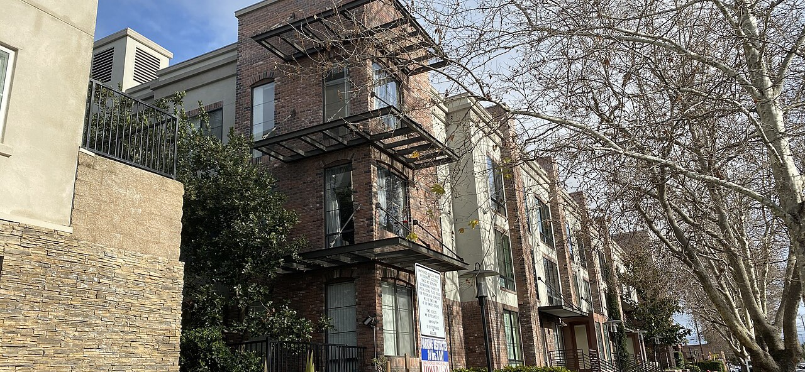

청년월세 2026, 5월 29일 마감 전에 보는 탈락 사유 3가지 — 소득 두 줄·재산 두 줄, 계산표
발행일 2026-10-04

30초 요약
| 항목 | 내용 |
|---|---|
| 대상 | 신청일 기준 만 19~34세(2026년은 1991~2007년생), 부모와 별도로 거주하는 무주택 청년. 학생·직장인 신분 무관 |
| 금액 | 실제 내는 월세 중 월 최대 20만원, 최대 24개월(회) = 총 최대 480만원. 월세가 15만원이면 15만원만 지급 |
| 소득·재산 | 청년가구 기준 중위소득 60% 이하(2026년 1인 154만원)+재산 1억2,200만원 이하, 원가구(부모 포함) 기준 중위소득 100% 이하(4인 649만 4,738원)+재산 4억7,000만원 이하 — 네 줄을 모두 통과해야 |
| 기한 | 2026년 신규 접수(3월 30일~5월 29일 오후 4시)는 이미 끝났고 9월 중 선정 발표·5월분 소급 지급 단계. 다음 신규 모집까지가 이 글을 읽을 시간 |
| 핵심 | 2026년부터 청약통장 가입 요건이 폐지됐습니다. 나머지는 그대로 — 거절 문자의 정체는 거의 항상 '원가구' 쪽 기준입니다 |
1. 누가 대상이냐 — 문턱은 '부모와 따로'에서 정해진다
청년월세 지원은 이름 그대로 청년 개인이 아니라 두 개 가구를 동시에 봅니다. 신청일 기준 만 19~34세(2026년 신청 가능 출생연도 1991~2007년생)면서 부모님과 별도로 거주하는 무주택 청년이 출발선이고, 소득·재산 심사는 아래 표처럼 청년가구와 원가구 두 갈래로 진행됩니다.
| 기준 | 청년가구(본인+배우자 등) | 원가구(청년가구+부모) |
|---|---|---|
| 소득 | 기준 중위소득 60% 이하 2026년 1인 가구 154만원 선 | 기준 중위소득 100% 이하 2026년 4인 가구 649만 4,738원 |
| 재산 | 1억 2,200만원 이하 | 4억 7,000만원 이하 |
여기서 가장 많이 헷갈리는 조항이 예외입니다. 본인이 만 30세 이상이거나, 혼인(이혼 포함) 경험이 있거나, 미혼이라도 본인 소득이 기준 중위소득 50% 이상이면 원가구 기준을 보지 않고 청년가구 소득·재산만 심사합니다. 부모 소득이 높아도 30세만 넘으면 자기 통장만으로 승부할 수 있다는 뜻이죠. 반대로 20대 후반 미혼 알바생은 부모 재산 4억 7,000만원 선까지 다 적용받습니다.
2. 내용 — 얼마를, 언제, 어떻게
선정되면 실제 납부하는 임대료 범위 안에서 월 최대 20만원이 입금됩니다. 월세 15만원이면 15만원, 25만원이면 20만원이 지급되고, 임차보증금이나 관리비는 지원 산정에 들어가지 않아요. 지급은 지원 기간에 속한 월의 25일(주말·공휴일이면 그 전날)에 현금으로 이뤄집니다.
횟수 관리가 조금 특합니다. 1차 사업(2022.8~2024.12)과 2차 사업(2024.2~2027.12)을 합쳐 생애 1회, 인당 최대 24회입니다. 1차에서 10회 받았다면 남은 잔여분은 14회고, 이미 24회를 다 채웠다면 신규 모집에 다시 지원할 자격이 없습니다. 방학으로 수급이 끊겨도 24회 이내면 이어 받을 수 있어요. 이사한 경우 전입신고 뒤 변경신청을 하면 지원을 이어갑니다.
2026년 신청 일정은 3월 30일부터 5월 29일 오후 4시까지였고, 전국 신규 6만 명 규모로 지자체 심사를 거쳐 9월 중 대상자가 정해졌습니다. 2026년 모집부터 바뀐 것 하나 — 청약통장 가입 요건 폐지(2024년 2차 사업에서 도입됐다가 올해 사라짐). 소득·재산과 주택 요건만 보면 되는 구조로 돌아왔습니다.
3. 제외·주의 — 거절 문자의 3대 출처
- 주택 소유는 청년 본인만 보면 안 됩니다. 청년가구 가구원 전원이 무주택이어야 하고, 분양권·입주권도 소유로 봅니다. 부모 집 한 채가 청년가구 기준을 건드리는 건 아니지만, 본인 명의 분양권이 있으면 바로 탈락입니다.
- 부모·형제 집을 빌려 살면 제외됩니다. 2촌 이내 혈족(배우자의 2촌 포함)으로부터 임차한 경우와 공공임대주택(행복주택·장기전세·매입·전세임대 등) 거주자는 지원 대상에서 빠져요. 월세를 내고 있어도 계약 상대가 가족이면 안 됩니다.
- '원가구'에서 떨어지는 사람이 많습니다. 청년 본인 소득이 적어도 부모 소득·재산이 선을 넘으면 탈락합니다. 30세 미만 미혼이면 특히 이쪽이 주된 거절 사유 — 복지로 모의계산으로 네 줄을 미리 대조해 보세요.
- 중복 제한이 걸립니다. 국토부·지자체 청년월세 지원(서울시 청년월세 등)을 이미 수혜 중이면 중복 지원되지 않고, 2차 사업 수혜자는 2차 사업(2027.12) 종료 후에야 다음 신청이 가능합니다.
- 지원은 끊기는 조건이 따로 있습니다. 군 입대, 90일을 초과한 해외 체류, 부모와 합가 같은 상황 변화가 생기면 수혜 중이라도 중단될 수 있어요.
4. 서류 — 이체 내역 3개월분이 승부처
| 서류 | 비고 |
|---|---|
| 월세지원 신청(변경)서·소득재산 신고서·서약서 | 주민센터와 복지로에 서식 있음 |
| 임대차계약서 + 월세 이체 증빙 3개월분 | 확정일자 날인 사본(없으면 공인중개사 날인 또는 등기부등본 병합). 갓 계약했다면 1개월분도 인정 |
| 입금통장 사본 | 지원금 입금 계좌 |
| 가족관계증명서(본인 기준·부/모 각각, 상세) | 주민등록번호 공개 기준 — 원가구 심사 근거 |
| 배우자·양가 가족관계증명서 | 혼인·이혼 상태면 필수. 예외(원가구 면제) 입증 서류를 겸함 |
| 부채 증빙(해당 시) | 임차보증금·주택 마련 용도 대출만 인정 — 대출기관 잔액증명 |
기숙사·고시원처럼 임대차계약서가 없는 거주시설은 입실확인서, (임대)사업자등록증, 기숙사비 영수증(성명·임차보증금·월세·계약일자 기재)으로 대체합니다. 부모 집이 자가가 아니면 부모의 임대차계약서도 내야 해요.
5. 순서 — 지금 시점(10월)에 할 일
- 선정 여부부터 확인한다. 2026년 신규분은 9월 중 발표가 끝났습니다. 신청했다면 복지로 신청 내역과 문자·알림을 확인하고, 미선정이었다면 사유 코드를 확인하세요.
- 네 줄을 미리 계산한다. 청년가구 소득(1인 기준 월 154만원 선)·재산 1억2,200만원, 원가구 소득(4인 649만 4,738원 선)·재산 4억7,000만원. 복지로 모의계산이 있으면 돌려보고, 없으면 다음 모집 공고문의 가구별 금액표를 대조합니다.
- 다음 모집 창구를 노린다. 2026년 신규 접수는 5월 29일로 끝났습니다. 상시·추가 접수 여부와 2027년 일정은 국토부와 주소지 지자체 공고를 통해 안내되므로, 자치단체 청년 포털 알림을 켜 두세요. 인천처럼 35~39세까지 확대하는 지자체도 있습니다.
- 이사·상태 변화가 있으면 변경신청을 미루지 않는다. 전입신고 후 변경신청으로 이어 받고, 중단 사유(입대·장기 해외체류·합가)가 생기기 전에 정리해 두면 나중에 환수 논쟁이 줄어요.
6. 안 될 때 — 문이 닫혔을 때의 창구
원가구 소득·재산에서 떨어진 경우 — 같은 제도 내 구제(이의신청)는 사실상 어렵습니다. 대신 본인 명의로 쓸 수 있는 창구를 돌리세요. 버팀목전세대출·행복주택처럼 청년가구 기준으로만 심사하는 주거 지원이 있고, 지자체 자체 월세 지원(서울시 청년월세 등: 19~39세, 중위소득 150% 이하, 보증금 8천만원·월세 60만원 이하 조건 — 정부 사업과 중복 불가)은 원가구 기준이 없는 곳이 많습니다.
주거비 자체가 위기인 경우 — 월세 체납이 밀려 독촉이 들어온 상태라면 청년월세보다 긴급복지(주거지원)가 빠른 카드입니다. 선지원 구조라 심사 전에 먼저 막아 주고, 선정 기준도 다릅니다.
24회를 다 채운 경우 — 청년월세 쪽 문은 생애 단 한 번이라 다시 열리지 않습니다. 전월세 대출 이자 지원이나 LH 매입임대(시세 90% 이하) 등 무주택 청년 대상의 다른 사업으로 갈아타세요.
지원 금액·기한·요건은 예산과 사업 개편에 따라 달라질 수 있습니다. 이 글은 특정 신청자의 선정 결과를 보증하지 않으며, 실제 판정 기준은 신청 시점의 국토교통부·주소지 지자체 공고와 복지로 심사 기준입니다.
바로 가기
- 복지로 — 청년월세 지원 온라인 신청·모의계산
bokjiro.go.kr - 보건복지부 — 기준 중위소득 연도별 고시
mohw.go.kr - 정부24 — 청년·주거 정책 한눈에
gov.kr
같이 읽기
- 청년월세 지원, 9월 선정 발표에 맞춰 지금 할 일 — 신청이 진행 중이라면 결과 확인 절차부터
- 행복주택 2026 — 소득분위별 임대료표와 주변 시세 대비 — 원가구에서 밀려도 청년가구 기준으로 노릴 수 있는 문
- 긴급복지지원 — 생계·의료·주거를 하루 안에 신청하는 법 — 월세가 밀려 독촉이 온 상황이라면 순서가 이것
- 두루누리 사회보험료 지원 2026 — 월세 지원과 별개로 4대보험료 줄이는 방법